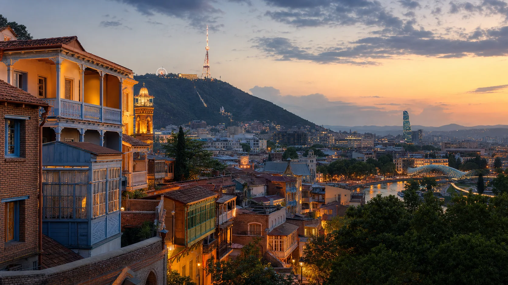

Kultur und Stadt
Tbilisi
Tbilisi ist der natürliche Startpunkt: Altstadtbalkone, Schwefelbäder, Kirchen, moderne Cafés, Märkte und Aussichtspunkte liegen dicht beieinander. Die Stadt ist nicht glatt, sondern lebendig: Verkehr, Musik, Essen, alte Fassaden, neue Bars und lange Abende.
Wer Georgien zum ersten Mal besucht, sollte hier nicht nur ankommen, sondern mindestens zwei volle Tage einplanen. Die Hauptstadt erklärt viele Gegensätze des Landes besser als jede Broschüre.
Tbilisi auf der Karte entdecken